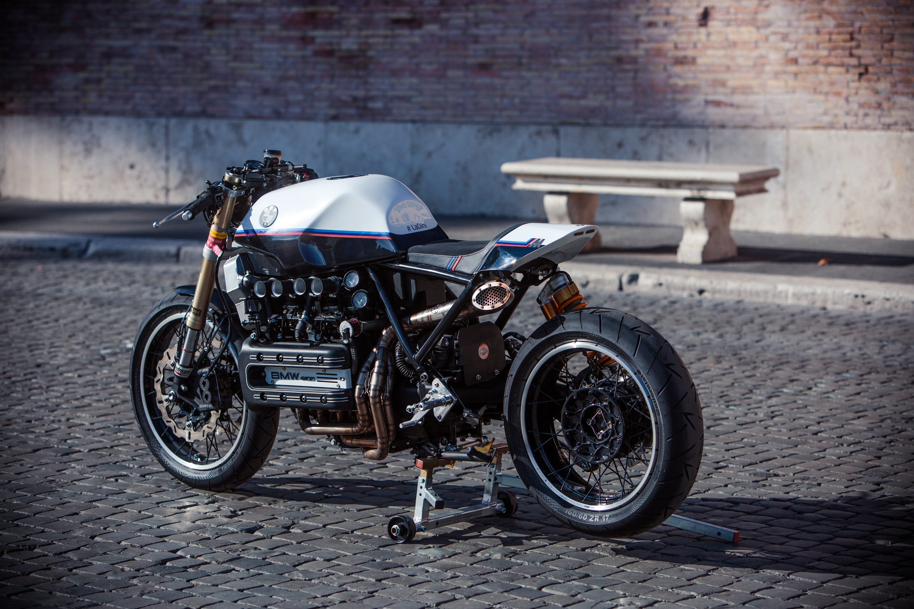
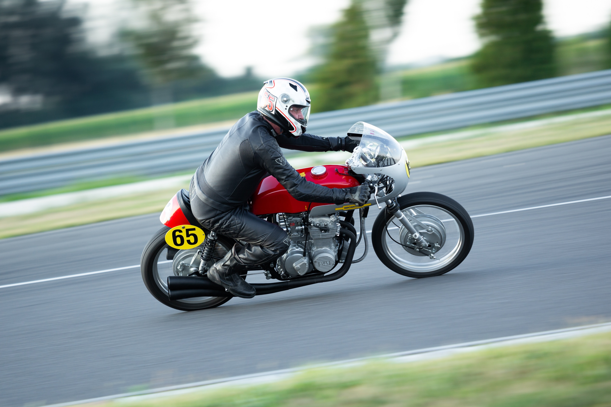
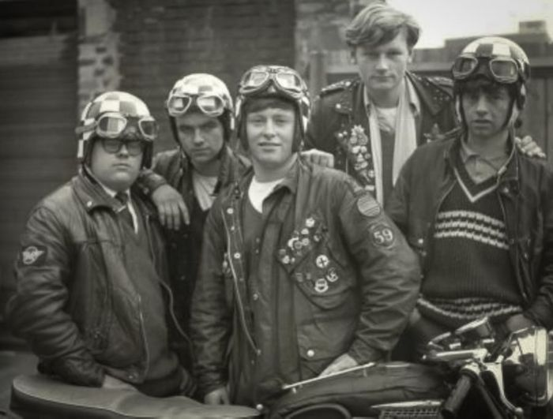

In 1950 in London, England, there was a group of young rockers--rock music lovers--who poured their hobbies and looked different with motorbikes. They want to create a new trend of motorcycle modification which is now known as the cafe racer flow.
Curabitur purus sem, malesuada eu luctus eget, suscipit sed turpis. Nam pellentesque felis vitae justo accumsan, sed semper nisi sollicitudin...
Fusce ullamcorper ligula sit amet quam accumsan aliquet. Sed nulla odio, tincidunt vitae nunc vitae, mollis pharetra velit. Sed nec tempor nibh...